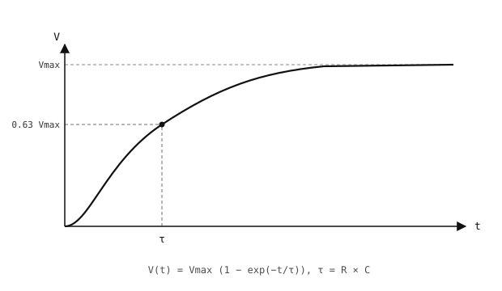

3.11. Anti-rebond¶
Un interrupteur est représenté comme un contact parfait, ouvert ou fermé, mais les contacts d’un interrupteur réel ne basculent pas proprement entre les deux états. Ils rebondissent – établissent et rompent le contact électrique plusieurs fois en quelques millisecondes avant de se stabiliser. Une entrée GPIO qui lit la broche perçoit cela comme une rafale de fronts ; une boucle de scrutation négligente compte plusieurs « appuis » pour un seul appui réel, et un gestionnaire d’interruption s’exécute plusieurs fois par appui effectif.

Un interrupteur qui rebondit produit une rafale de transitions rapides avant de se stabiliser.¶
L”anti-rebond est la pratique consistant à filtrer ces rebonds afin que chaque appui physique soit enregistré comme un événement unique. Deux approches résolvent ce problème – logicielle (une règle temporelle dans le micrologiciel) ou matérielle (un petit filtre sur le fil). Elles ne s’excluent pas mutuellement.
3.11.1. Anti-rebond logiciel¶
L’idée consiste à mémoriser le moment où l’entrée a changé pour la dernière fois et à rejeter tout changement ultérieur survenant dans une courte fenêtre suivant cet horodatage. Le rebond des contacts dure généralement moins de 10 ms ; un appui réel prend 50 – 100 ms ; une fenêtre de 30 – 50 ms capture tous les rebonds sans bloquer les appuis réels.
Dans une boucle de scrutation, lisez la broche, comparez-la à la dernière valeur stable, et n’acceptez un changement qu’une fois la fenêtre d’anti-rebond écoulée :
import time
from machine import Pin
button = Pin("P0", Pin.IN, Pin.PULL_UP)
last_state = 1
last_change = 0
DEBOUNCE_MS = 50
while True:
now = time.ticks_ms()
state = button.value()
if state != last_state and time.ticks_diff(now, last_change) > DEBOUNCE_MS:
last_change = now
last_state = state
if state == 0:
do_action()
time.sleep_ms(10)
Pour les lectures pilotées par interruption, appliquez la même règle temporelle à l’intérieur du gestionnaire, puis transmettez l’appui réel au contexte principal via micropython.schedule() (voir Entrée GPIO) :
import time
import micropython
from machine import Pin
button = Pin("P0", Pin.IN, Pin.PULL_UP)
last_irq = 0
DEBOUNCE_MS = 50
def handle_press(pin):
do_action()
def on_press(pin):
global last_irq
now = time.ticks_ms()
if time.ticks_diff(now, last_irq) < DEBOUNCE_MS:
return
last_irq = now
micropython.schedule(handle_press, pin)
button.irq(handler=on_press, trigger=Pin.IRQ_FALLING)
L’ISR filtre les rebonds par horodatage et met la fonction de rappel en file d’attente ; handle_press s’exécute de nouveau dans le contexte principal, où l’allocation et les E/S lentes sont sûres.
3.11.2. Anti-rebond matériel¶
L’anti-rebond matériel filtre les rebonds électriquement, avant même qu’ils n’atteignent la broche. L’outil standard est un condensateur.
Un condensateur est un composant à deux bornes qui stocke une charge électrique. Physiquement, il s’agit de deux plaques conductrices maintenues à faible distance l’une de l’autre, séparées par un isolant (le diélectrique).

Un condensateur à plaques parallèles : deux conducteurs séparés par une couche isolante.¶
L’application d’une tension à ses bornes provoque l’accumulation de charges égales et opposées sur les deux plaques ; la relation est
Q = C × V
où Q est la charge stockée (coulombs), V est la tension aux bornes du condensateur, et C est sa capacité (farads). La capacité est fixée par la construction du composant ; une capacité plus élevée signifie davantage de charge stockée à tension égale.
La conséquence : un condensateur ne peut pas changer sa tension instantanément. La charge qui entre ou sort doit traverser la résistance présente sur le trajet, et cette résistance détermine la vitesse à laquelle la tension peut varier.
3.11.2.1. Constante de temps RC¶
Charger un condensateur à travers une résistance produit une montée exponentielle progressive vers la tension d’alimentation, et non un échelon. Le temps caractéristique de cette montée est la constante de temps RC :
τ = R × C
Au bout d’un τ, le condensateur a atteint environ 63 % de la tension d’alimentation. Au bout de 5 τ, il dépasse 99 % – « complètement chargé » en pratique.

Un condensateur se charge le long d’une courbe exponentielle. τ = RC est le temps nécessaire pour atteindre 63 % de la tension finale.¶
La décharge à travers une résistance suit l’image miroir : la tension décroît exponentiellement depuis sa valeur initiale vers zéro, tombant à 37 % de la tension de départ au bout d’un τ, et à moins de 1 % au bout de 5 τ.

Un condensateur se décharge le long d’une décroissance exponentielle. τ = RC est le temps nécessaire pour tomber à 37 % de la tension de départ.¶
3.11.2.2. Le circuit d’anti-rebond¶
Un condensateur placé entre une broche d’entrée et la masse, alimenté à travers une résistance série, forme un filtre passe-bas. Les pics rapides n’ont pas le temps de charger ou décharger le condensateur à travers cette résistance ; la broche reste proche de la tension à laquelle elle se trouvait avant le pic. Les changements lents – un appui délibéré – chargent ou déchargent le condensateur et la lecture suit.
R1 tire le côté haut de l’interrupteur vers Vcc, produisant un signal d’interrupteur brut qui rebondit. R2 et C filtrent ensuite ce signal en passe-bas vers la broche :

Anti-rebond matériel : R2 et C filtrent en passe-bas le signal brut de l’interrupteur avant qu’il n’atteigne la broche.¶
Valeurs typiques : R1 = 10 kΩ (tirage), R2 = 10 kΩ (série), C = 100 nF.
Lorsque l’interrupteur est ouvert, le courant circule Vcc → R1 → R2 → condensateur (en série), chargeant le condensateur à Vcc avec τ_charge = (R1 + R2) × C = 2 ms.
Lorsque l’interrupteur se ferme, le nœud de l’interrupteur est ramené à la masse et le condensateur se décharge à travers R2 seul vers cette masse avec τ_discharge = R2 × C = 1 ms.
Les deux fronts sont filtrés par le RC. Comme le condensateur se trouve sur son propre nœud, en aval de R2 par rapport à l’interrupteur, il oscille proprement entre Vcc (ouvert) et 0 V (fermé) – aucun courant n’a à circuler à travers R1 en régime permanent dans l’un ou l’autre cas.
3.11.3. Choisir entre les deux¶
Le logiciel est l’option par défaut. Il ne coûte rien en composants, le seuil est facile à régler, et il fonctionne sur n’importe quelle broche lue par le CPU.
Le matériel vaut la dépense en composants lorsque le rebond atteint autre chose que le code de scrutation du CPU – une interruption qui ne doit pas se déclencher deux fois, un compteur matériel, un périphérique dépourvu de son propre filtre.
L’anti-rebond logiciel et matériel coexistent également en bonne entente : un petit filtre RC supprime les pics les plus marqués, et une fenêtre d’anti-rebond logiciel couvre ce qui reste.